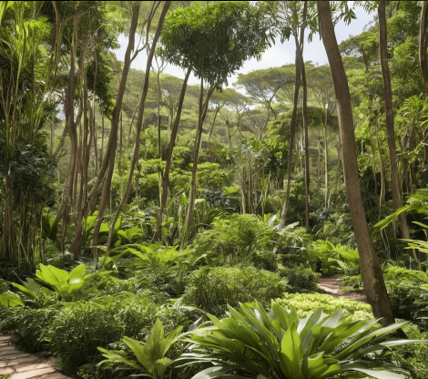
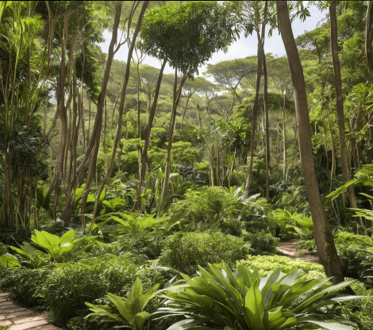
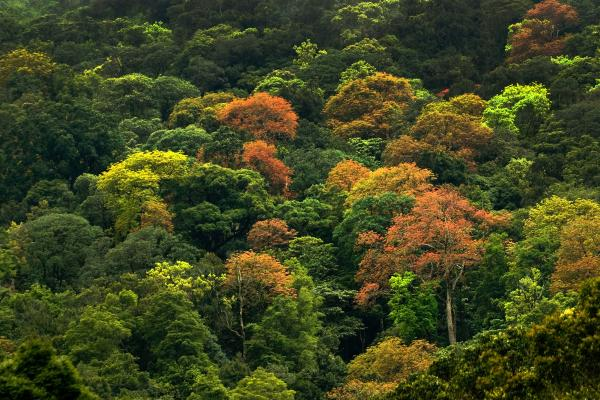
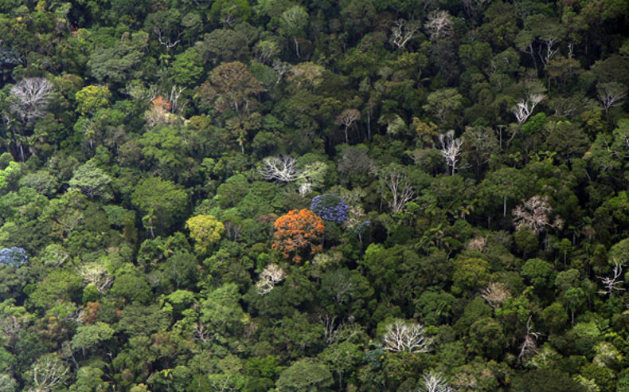
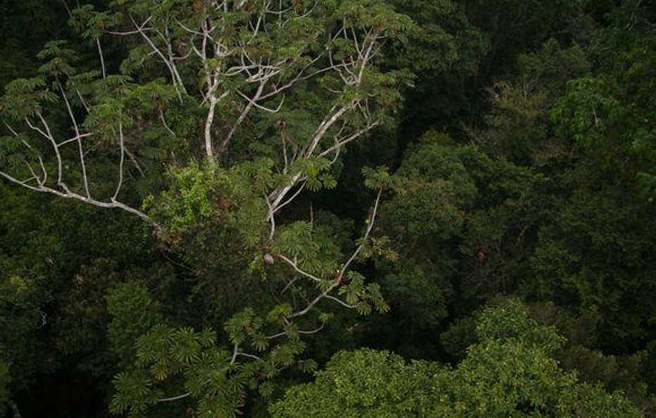

En México el Bosque tropical comprende al sureste de San Luis Potosí, norte de Hidalgo
y en el golfo de México los estados de Veracruz, Tabasco, Campeche, Yucatán y Quintana Roo,
así como regiones de Oaxaca y Chiapas.
Angel Esteban Tabardillo Briones
Dayann Gerardo Cordova Armendariz
Juan Pablo Ortiz Gonzales
Ivan Alberto Rodriguez Hernandez
Jose Rigoberto Martinez Peraza
303 Vespertino
Héctor Navarro Flores - Ecosistemas